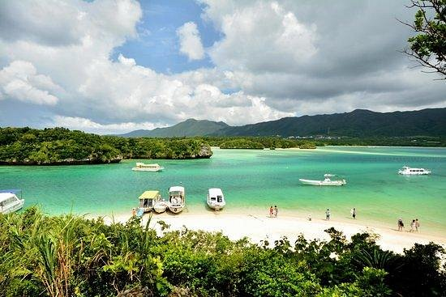
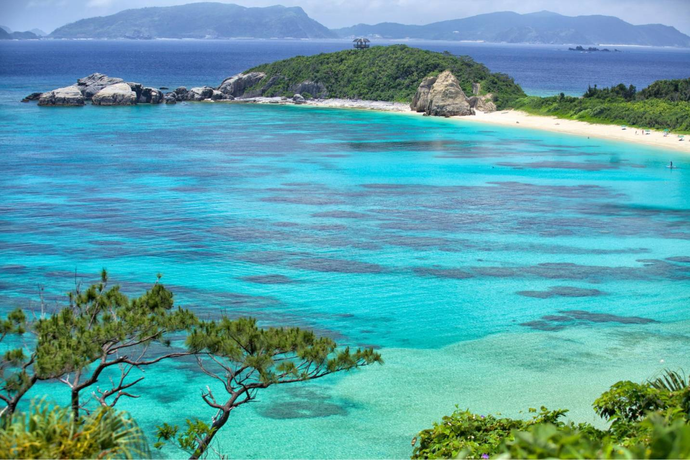
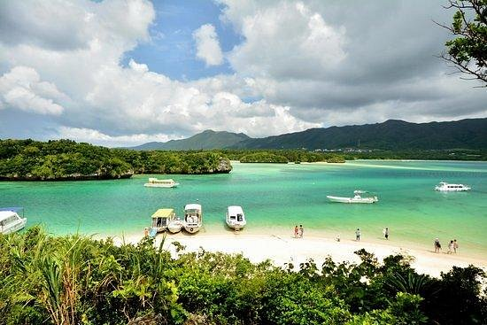
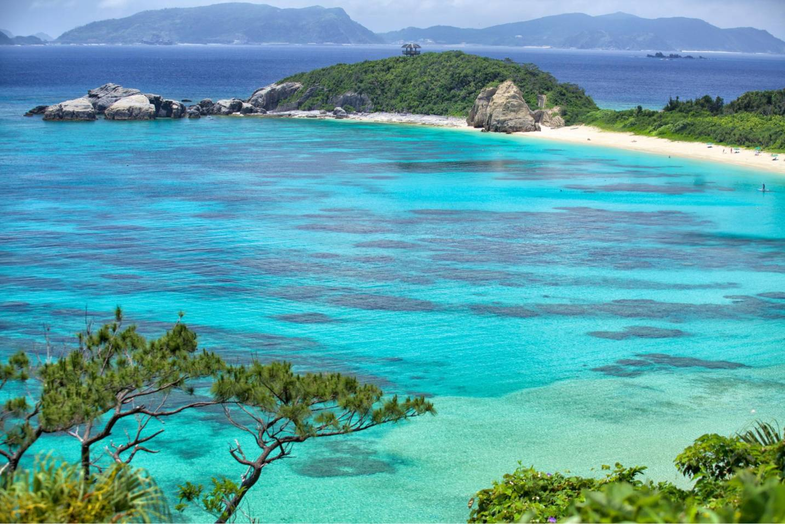

Filip
Okinawa nije planina, već najveći ostrvo u Okinawa arhipelagu, deo Japana. Poznata je po prelepim plažama, koralnim grebenima i bogatoj kulturi. Ostrvo ima i planinske predjele, kao što je planina Yonaha, popularna među planinarima. Okinawa je takođe poznata po istorijskim lokalitetima i jedinstvenoj flori i fauni.


 


